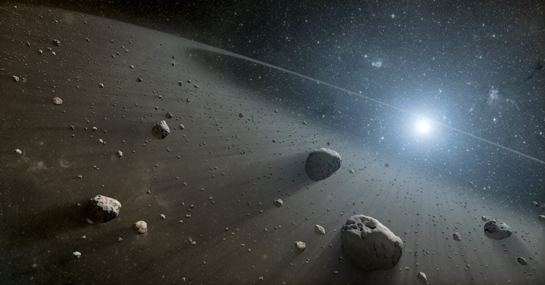

ကမ္ဘာပေါ်က နက္ခတ် ပညာရှင်တွေဟာ နေအဖွဲ့အစည်း ပြင်ပက ကြယ်တွေကို ပတ်နေတဲ့ ဂြိဟ်တွေပေါ်မှာ သက်ရှိတွေ ရှိမလား ဆိုတာကို ဒေါ်လာ သန်းပေါင်းများစွာ အကုန်ကျခံပြီး ကြိုးစား ရှာဖွေ နေခဲ့ကြပါတယ်။ ဒါပေမယ့် အခု ထက်ထိတော့ ကမ္ဘာ ပြင်ပမှာ သက်ရှိတွေ ရှိနိုင်တယ် ဆိုတဲ့ အရိပ်အယောင် လေးတောင် ရှာမတွေ့ကြ သေးပါဘူး။
ဒီလို ကမ္ဘာပြင်ပမှာ သက်ရှိတွေ ရှာမတွေ့ရတဲ့ အကြောင်းရင်း တွေထဲက တခုကတော့ စကြာဝဠာ ထဲမှာ သက်ရှိတွေ ဖြစ်ထွန်းဖို့နဲ့ ရှင်သန် ပေါက်ဖွား နိုင်ဖို့ လိုအပ်တဲ့ သဘာဝ ပတ်ဝန်းကျင် အခြေအနေ ဖြစ်ပေါ်ဖို့ ဆိုတာ အလွန် ရှားပါးလွန်းလို့လဲ ဖြစ်နိုင်ပါတယ်။ ဒီတော့ ဒီလို ရှားပါးတဲ့ သဘာဝ ပတ်ဝန်းကျင် ရှိတဲ့ ဂြိုဟ်တစ်စင်း ရှာတွေ့ဖို့ ဆိုတာက ကောက်ရိုးပုံထဲအပ်ပျောက် ရှာရသလို ဖြစ်နေမှာ သေခြာပါတယ်။
ဒီတော့ သိပ္ပံ ပညာရှင်တွေအဖို့ ကမ္ဘာပေါ်မှာ အသက်ဇီဝ ဘယ်လို ဖြစ်ပေါ် လာသလဲ ဆိုတာကို သိပ္ပံ ပညာရှင်တွေ အထူးတလည် စိတ်ဝင်စား ကြတာ မဆန်းပါဘူး။
အခုနောက်ဆုံး တင်ပြလာခဲ့တဲ့ သုတေသန စာတမ်း တစောင်ရဲ့ အဆိုအရဆို ကျွန်တော်တို့တွေ အသက်ရှင်သန် ပေါက်ဖွားလာ ရတာဟာ ဥက္ကာပျံတွေ ကမ္ဘာကို ဝင်ဆောင့်ခဲ့ တာနဲ့ နေက ကျေရောက်တဲ့ ရေဒီယို သတ္တိကြွ ဂမ်မာ ရောင်ခြည် လှိုင်းတွေရယ်ကြောင့် ဖြစ်မယ်လို့ ဆိုပါတယ်။
ဒီ စာတမ်းကို သုတေသန ဂျာနယ် တစ်စောင် ဖြစ်တဲ့ ACS Central Science မှာ ပညာရှင် တစ်ဖွဲ့က တင်ပြလာ ခဲ့တာ ဖြစ်ပါတယ်။ ဒီ အဆိုပြုချက်ဟာ ဖြစ်နိုင်ပါ့ မလားလို့ ထင်စရာ ရှိပေမယ့် အခု သုတေသန စာတမ်းဟာ လက်တွေ့ သုတေသန စမ်းသပ်မှု ရလဒ်ကို အခြေပြုပြီး တင်ပြထားတာ ဖြစ်ပါတယ်။
ကမ္ဘာဦး အစတုန်းက ကမ္ဘာပေါ်မှာ အခုလို သစ်တောတွေ သက်ရှိတွေနဲ့ စိမ်းစို လန်းဆန်းနေ ခဲ့တာ မဟုတ်ပါဘူး။ အဲ့သည် အချိန်က ကမ္ဘာဟာ ကျောက်ဆိုင်ကျောက်သား တွေနဲ့ ဖွဲ့စည်းထားတဲ့ ကျောက်သား ဂြိုဟ် တစ်စင်းသာ ဖြစ်ပါတယ်။
ဒါပေမယ့် ကမ္ဘာရဲ့ နေက အကွာအဝေးကြောင့် ကမ္ဘာပေါ်မှာ ရေဟာ အရည်အဖြစ် ရှိနေနိုင်တဲ့ အပူချိန် တစ်ခု ရရှိ နေခဲ့ပါတယ်။ ဒီအချက်ဟာ အရေးပါတဲ့ အချက် ဖြစ်ပါတယ်။ ဒီ့ထက် နေနဲ့ ပိုနီးသွားရင် ရေကို ရေငွေ့အနေနဲ့ပဲ တွေ့ရမှာ ဖြစ်ပြီး ဒီ့ထက် ပိုဝေးသွား ခဲ့ရင်လဲ ရေဟာ ရေခဲအဖြစ် ပြောင်းလဲသွားမှာ ဖြစ်ပါတယ်။
ဒီလို ရေငွေ့ (သို့) ရေခဲ အခြေအနေ နှစ်ခုလုံးဟာ သက်ရှိတွေ ပေါက်ဖွား ရှင်သန်နိုင်တဲ့ အခြေအနေ သဘာဝ ပတ်ဝန်းကျင် မဟုတ်ပါဘူး။ သက်ရှိတွေ ရှင်သန်နိုင်ဖို့ဆို ရေဟာ အရည် အခြေအနေမှာ ရှိရမှာ ဖြစ်ပါတယ်။
ဒီလို သင့်တင့်မျှတတဲ့ သဘာဝ ပတ်ဝန်းကျင်ကြောင့် ရှေးဦး ကမ္ဘာဟာ ကံကောင်းစွာပဲ ရေတွေ ပြည့်နေတဲ့ သမုဒ္ဒရာ ကြီးတွေကို ပိုင်ဆိုင် ခဲ့ပါတယ်။
နောက်ပြီး ဒီ့ထက် ကံကောင်းတာ ကတော့ ကမ္ဘာ့ လေထုထဲမှာ အဓိက ပါဝင်တဲ့ ဓါတ်ငွေ့တွေဟာ နိုက်ထရိုဂျင်နဲ့ အောက်ဆီဂျင် ဓါတ်ငွေ့တွေ ဖြစ်နေ ပါတယ်။ (ဒီနေရာမှာ လေထုထဲက အောက်ဆီဂျင်ကို ကမ္ဘာဦးက မိသိန်းဓါတ်ငွေ့ကို စားသုံးတဲ့ ပိုးမွှားတွေက ထုတ်ပေးတယ် ဆိုတဲ့ သီအိုရီ တစ်ရပ်လဲ ရှိပါသေးတယ်။)
ဒါဆို ကမ္ဘာပေါ်ကို သက်ရှိတွေ ဘယ်လို ရောက်လာ သလဲ။
ကမ္ဘာပေါ်က သက်ရှိတွေရဲ့ အခြေခံ အဆောက်အဦ တစ်ခုက အမီနို အက်ဆစ် (amino acid) တွေပဲ ဖြစ်ပါတယ်။ ဒါပေမယ့် ဒီ အမီနို အက်ဆစ်တွေ ဘယ်လို စပြီး ဖြစ်လာသလဲ။
အခု စာတမ်းကို တင်ပြတဲ့ ပညာရှင် အဖွဲ့ရဲ့ခေါင်းဆောင် ဖြစ်သူ ယိုကို ကီဘူကာဝါ (Yoko Kebukawa) ရဲ့ အဆိုအရ ဒီ အမီနို အက်ဆစ်တွေကို ဥက္ကာခဲ တွေက ကမ္ဘာပေါ်ကို သယ်ဆောင် လာခဲ့တယ်လို့ ဆိုပါတယ်။
ဒါဆို ဒီ အမီနို အက်ဆစ်တွေ ဥက္ကာခဲ တွေပေါ်ကို ဘယ်လို ရောက်လာသလဲ။
အမီနို အက်ဆစ် ဖြစ်ပေါ်စေတဲ့ အခြေခံ ဒြပ်စင်တွေ ဖြစ်တဲ့ အောက်ဆီဂျင်၊ နိုက်ထရိုဂျင်နဲ့ ကာဗွန် ဒြပ်စင်တွေ၊ နောက်ပြီး အခြား ဒြပ်စင်နဲ့ ဒြပ်ပေါင်းတွေဟာ စကြာဝဠာ အနှံ့မှာ ပြန့်နှံ့ လွင့်မြောနေ ကြပါတယ်။ ကမ္ဘာပေါ်ကို ရောက်လာတဲ့ ဥက္ကာခဲ တွေထဲမှာလဲ ဒီ အခြေခံ ဒြပ်စင် နဲ့ ဒြပ်ပေါင်းတွေ ပါဝင်ပါတယ်။
ဒီ ဥက္ကာခဲတွေ အာကာသထဲ ခရီးနှင် လာတဲ့ အချိန်မှာ သူတို့ အပေါ် နေက ဂမ္မာ ရောင်ခြည်လှိုင်းတွေ လာရောက် ရိုက်ခတ်ပါတယ်။ ဒီ ဂမ္မာ ရောင်ခြည် လှိုင်းတွေဟာ စွမ်းအားမြင့် ရေဒီယို သတ္တိကြွ လှိုင်းတွေ ဖြစ်တာမို့ သူတို့ ရိုက်ခတ် မိတဲ့ အခါမှာ ဒီ အခြေခံ ဒြပ်စင် နဲ့ ဒြပ်ပေါင်းတွေဟာ ပေါင်းစပ် ဓါတ်ပြုပြီး အမီနို အက်ဆစ်တွေ ဖြစ်ပေါ် လာရတာလို့ ဒီစာတမ်းမှာ တင်ပြ ထားပါတယ်။
ဒီ စာတမ်းရဲ့ အဆိုအရ ဥက္ကာခဲ တွေပေါ်မှာ တွေ့ရလေ့ ရှိတဲ့ အမိုးနီးယား၊ ဖော်မဲလ်ဒီဟိုဒ် နဲ့ အခြား ဒြပ်ပေါင်းတွေဟာ ပူနွေးတဲ့ ရေထဲမှာ ဓါတ်ပြုပြီး အမီနို အက်ဆစ် တွေအဖြစ် ပြောင်းလဲ သွားနိုင်တယ်လို့ ဆိုပါတယ်။
ဥက္ကာခဲ အများအပြား ပေါ်မှာ ရေခဲ တွေ ရှိကြပါတယ်။ ဒါပေမယ့် အာကာသ ဟင်းလင်းပြင် ထဲမှာ ဒီ ရေခဲတွေ အရည်ပျော် ဖို့ဆိုတာက သိပ်မလွယ်တဲ့ ကိစ္စ တစ်ခု ဖြစ်ပါတယ်။
ဒီနေရာမှာ နေက ထွက်လာတဲ့ စွမ်းအားပြင်း ဂမ္မာ ရောင်ခြည်လှိုင်းတွေရဲ့ အခန်းက အရေးပါလာပါပြီ။
ဒီ ဂမ္မာ ရောင်ခြည်လှိုင်းတွေဟာ ဥက္ကာခဲ တွေပေါ်က ရေကို အရည်ပျော်ပြီး ပူလာအောင် လုပ်ပေးနိုင်စွမ်း ရှိပါတယ်။ ဒီလို အခြေအနေမှာ အခြေခံ ဒြပ်ပေါင်းတွေ ပေါင်းစပ်ပြီး အမီနို အက်ဆစ်တွေ ဖြစ်ပေါ် လာနိုင်တယ်လို့ ဒီစာတမ်းမှာ တင်ပြ ထားပါတယ်။
အာကာသ ထဲမှာ ဂမ္မာ ရောင်ခြည်တွေကို နေကတင် ရရှိနိုင်တာ မဟုတ်ပါဘူး။ ဥက္ကာခဲ တွေပေါ်မှာ ပါလာလေ့ ရှိတဲ့ ရေဒီယို သတ္တိကြွ ဒြပ်စင်တွေ ပြိုကွဲရာ ကနေလဲ ဂမ္မာရောင်ခြည် တွေ ထွက်ပေါ် လာနိုင် ပါသေးတယ်။ ဥပမာ ဥက္ကာခဲတွေ ပေါ်မှာ တွေ့ရလေ့ ရှိတဲ့ Cobalt-60 ဟာ ရေဒီယို သတ္တိကြွ ဒြပ်စင် တစ်ခု ဖြစ်ပါတယ်။
ဒီအချက်ကို သက်သေ ပြ နိုင်ဖို့ ပညာရှင် တွေဟာ လက်တွေ့ စမ်းသပ်မှု တစ်ခုကို ပြုလုပ် ခဲ့ကြပါတယ်။
ဒီ စမ်းသပ်မှုမှာ အမိုးနီးယား (ammonia) နဲ့ ဖော်မဲလ် ဒီဟိုဒ် (formaldehyde) ဒြပ်ပေါင်းတွေကို ဓါတ်ခွဲခန်း ထဲက စမ်းသပ်ဖန်ပြွန်ထဲ ထည့်လိုက်ပါတယ်။ ဒီ စမ်းသပ်ဖန်ပြွန်ကို Cobalt-60 ရေဒီယို သတ္တကြွ ဒြပ်စင်တွေ နဲ့အတူ ထားပြီး ဒီက ထွက်လာတဲ့ ဂမ္မာ ရောင်ခြည်တွေ အောက်မှာ အချိန် အတော်ကြာ ထားလိုက်ပါတယ်။
ဒီ အခါ ဘာတွေ့ရ သလဲဆိုတော့ ဒီ စမ်းသပ်ဖန်ပြွန် ထဲမှာ အခြေခံ အမီနို အက်ဆစ်တွေ ဖြစ်တဲ့ alanine, glycine နဲ့ အခြား အမီနို အက်ဆစ်တွေ ပေါက်ဖွားလာ ကြတာကို တွေ့ကြ ရပါတယ်။
ဒီအချက် တခုတည်း နဲ့တော့ ဥက္ကာခဲ တွေပေါ်မှာ အမီနို အက်ဆစ် ဖြစ်ထွန်းလာတယ် ဆိုတာ သက်သေ မပြနိုင် သေးပါဘူး။ ဒီလိုပဲ ကမ္ဘာပေါ်ကို အသက်ဇီဝဟာ ပြင်ပ အာကာသ ကနေ ရောက်လာတယ် ဆိုတာကိုလဲ သက်သေ မပြနိုင် သေးပါဘူး။ ဒါပေမယ့် ဒီ သုတေသန ရလဒ်ဟာ ကမ္ဘာပေါ်ကို အသက်ဇီဝ အာကာသ ကနေ ရောက်လာတယ် ဆိုတဲ့ သီအိုရီ အတွက် အရေးပါတဲ့ အထောက်အထား တစ်ရပ် ဖြစ်တယ်လို့ ပညာရှင် တွေက ရှင်းပြပါတယ်။
Ref: Life on Earth was created by meteorite strikes and gamma rays, claims study
ကမ္ဘာပေါ်က အသက်ဇီဝကို ဥက္ကာပျံတွေက သယ်ဆောင်လာ တာလား

January 3, 2023
Other Posts
- Sukhoi Su-30 ဘက်စုံသုံး တိုက်လေယာဉ်
- ဒီည မြန်မာနိုင်ငံက မြင်တွေ့ရမယ့် လအပြည့်ကြတ်ခြင်း
- ကြာသပတေးဂြိုဟ်ပေါ် လူသားတွေ ဆင်းနိုင်မလား
- ကမ္ဘာနဲ့ အရွယ်တူ ဂြိုဟ်တစ်စင်း ရှာတွေ့
- ဘလက်ဟိုး တွင်းနက်က ကြယ်တလုံးကို ဝါးမြိုလိုက်တဲ့ ဖြစ်စဉ်
- အထက်တန်း ကျောင်းသားတွေ ထွင်တဲ့ ၁ ဒေါ်လာတန် ခဲဆိပ်စစ် ရေစစ်
- နေအဖွဲ့အစည်းအတွင်း သက်ရှိတွေ ရှိနေနိုင်တဲ့ လ ၆ စင်း
- ချင်ပန်ဇီ မျောက်တွေရဲ့ ဘာသာစကား ရှာဖွေတွေ့ရှိ
- RPG ဘယ်လို အလုပ်လုပ်လဲ
- လေယာဉ်တွေ ဘယ်လောက်မြင့်မြင့် ပျံနိုင်သလဲ